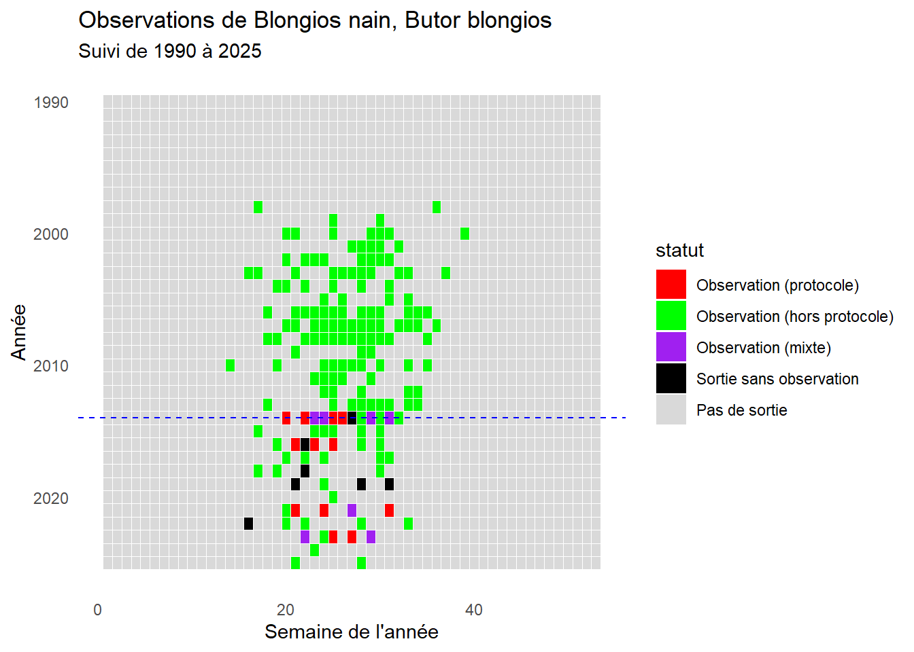
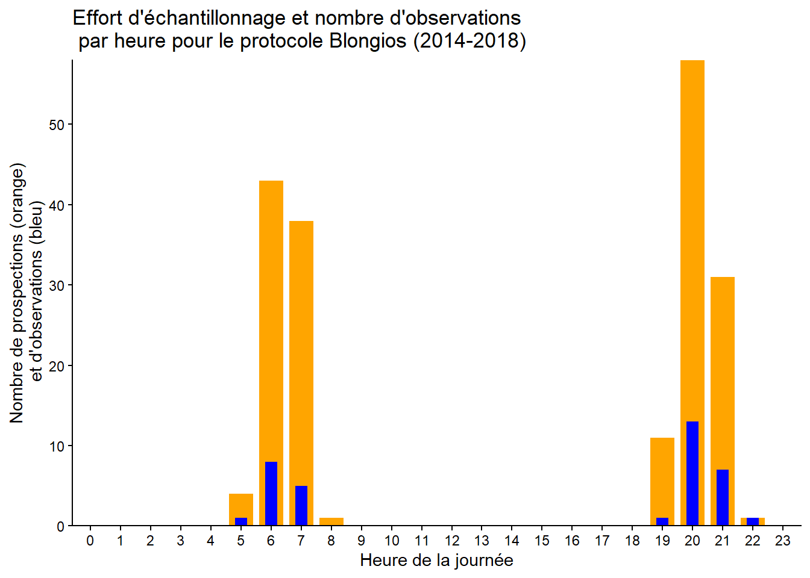
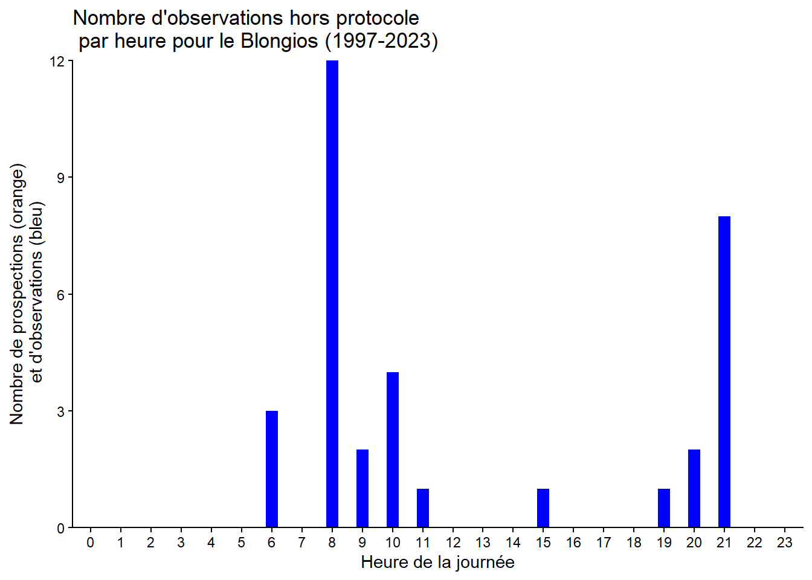

clean_blongios
Analyse des observations de Blongios nain (Ixobrychus minutus) dans la Reserve Naturelle du Bagnas
1. Introduction
Le Blongios nain (Ixobrychus minutus) est une espèce emblématique des zones humides, inféodée aux roselières inondées, aux berges de lacs et de cours d’eau ainsi qu’aux marais, qui lui fournissent à la fois des ressources alimentaires et des sites favorables à la nidification. Particulièrement discret, il demeure le plus souvent dissimulé au sein de la végétation, ce qui rend son observation difficile. Il s’agit d’une espèce migratrice, quittant les sites de reproduction européens à la fin de l’été pour hiverner principalement en Afrique subsaharienne. L’Inventaire national du patrimoine naturel réalisé entre 2013 et 2015, indique que l’espèce est présente dans une cinquantaine de départements de France métropolitaine, notamment dans le nord du territoire (Hauts-de-France, Île-de-France), l’est (Grand Est, Auvergne-Rhône-Alpes), les départements littoraux du sud le long de la Méditerranée, ainsi que dans quelques départements du centre du pays. Toutefois, un déclin des populations est observé depuis les années 1970, principalement lié à la raréfaction et à la dégradation de ses habitats de reproduction. En conséquence, le Blongios nain est classé « En danger » (EN) sur la Liste rouge nationale, tandis qu’il est considéré en « Préoccupation mineure » (LC) à l’échelle européenne. Dans ce contexte, la réserve naturelle du Bagnas a exprimé le besoin de disposer d’une analyse approfondie des données d’observation du Blongios nain collectées sur le site entre 1990 et 2021. L’objectif est, dans un premier temps, de comparer les données opportunistes à celles issues de protocoles standardisés de suivi — notamment les points d’écoute visant la détection des mâles chanteurs — afin d’évaluer l’efficacité et la pertinence des différents dispositifs de suivi. Dans un second temps, il s’agit de caractériser la structure spatio-temporelle de la présence du Blongios nain au sein de la réserve. Nous nous sommes ainsi interrogés sur la structure de l’effort de prospection au cours du temps, tant à l’échelle annuelle que journalière, ainsi que sur les facteurs influençant la détection de l’espèce lors des prospections, en lien avec sa phénologie et les modalités d’échantillonnage.
2. Importation des packages
3. Definition du répertoire de travail et importation des données
4. Analyses exploratoires
A) Répartition temporelle des observations de Blongios nain depuis 1990
En premier lieu, nous voulions visualiser l’absence et la présence du Blongios nain sur toute la période d’étude. Pour cela, nous avons créé une grille années X semaines qui montre toutes les sorties avec et sans observation d’individus. Les cases du graphiques sont colorées de manière à différentier (i) les semaines avec observation d’un Blongios lors d’un protocole standardisé, (ii) les semaines avec observation opportuniste d’un Blongios, (iii) les semaines avec à la fois des observations opportuniste et par protocole standardisé, et (iiii) les semaines sans observation d’un Blongios.
Premièrement, on observe que l’ensemble des observations est concentré approximativement entre les semaines 16 et 35 (printemps–été), ce qui correspond bien à la période de présence du Blongios nain sur le littoral méditerranéen français. Le protocole de suivi standardisé a débuté en 2014, avec plusieurs passages réalisés tous les deux ans environ (entre 3 et 8 passages selon les années). Enfin, les résultats suggèrent une diminution de la présence du Blongios nain sur la réserve au cours du temps. En effet, le nombre total de semaines avec au moins une observation semble décroître, avec seulement deux semaines de présence détectée en 2024 contre onze en 2004. Cette tendance pourrait indiquer soit un déclin de la population globale, soit une diminution de l’attractivité écologique du site du Bagnas pour la population nicheuse.
B) Répartition spatiale des observations de Blongios nain issues du protocole standardisé de suivi
Ensuite, nous voulions visualiser la répartition spatiale des observations de Blongios nain issues du protocole standardisé de suivi. Pour cela, nous avons créé une carte avec des cercles dont la taille est proportionnelle au nombre total d’individus entendus/vus sur chaque site d’écoute depuis le début du protocole en 2014.
Sur cette carte on peut voir que certains sites semblent plus propice à l’observation d’individus de Blongios nain que d’autres. Notamment les sites n°5 et 6 semblent être les plus favorables à l’observation de cette espèce.
C) Effort d’échantillonnage journalier et répartition temporelle journalière des observations protocolées de Blongios nain
Ici, nous voulions comprendre à quel moment de la journée était réalisé le protocole, et quelles étaient les horaires qui permettaient une meilleure détection de l’espèce. Pour cela, nous avons réalisé un graphique qui représente l’effort d’échantillonnage ainsi que le nombre d’obervations cumulés au cours du protocole blongios pour chaque heure de la journée de 2014 à 2025. L’effort d’échantillonnage est représenté par la somme des sorties effectuées.
# A tibble: 8 × 2
heure_debut_tronc `sum(nombre_min)`
<int> <dbl>
1 5 1
2 6 8
3 7 5
4 8 0
5 19 1
6 20 13
7 21 7
8 22 1
Ici, on observe que les sorties protocolées sont majoritairement réalisées entre 6 h et 7 h du matin ainsi qu’entre 20 h et 21 h, ce qui correspond aux plages horaires du protocole standardisé et aux périodes d’activité maximale du Blongios nain. Ces créneaux apparaissent pertinents, puisque c’est durant ces périodes que l’espèce est le plus fréquemment détectée
D) Effort d’échantillonnage journalier et répartition temporelle journalière des observations opportunistes de Blongios nain
Similairement, ici nous voulions comprendre à quel moment de la journée était faites les sorties hors protocole standardisé, et quelles étaient les horaires qui permettaient une meilleure détection de l’espèce sur ce type de données. Pour cela, nous avons réalisé un graphique qui représente le nombre d’obervations hors protocole cumulés pour chaque heure de la journée de 1997 à 2023. Il est important de préciser que les sorties hors protocole où l’heure d’observation est identifiée sont très rares (n=46), et correspondent en majorité à des données produites lors d’autres protocoles non dédiés à cette espèce.
# A tibble: 11 × 2
heure_debut_tronc `sum(nombre_min)`
<int> <int>
1 4 0
2 5 0
3 6 3
4 8 12
5 9 2
6 10 4
7 11 1
8 15 1
9 19 1
10 20 2
11 21 8
On remarque que hors protocole standardisé, le Blonios nain est essentiellement entre 6 et 11h du matin et entre 19 et 21h du soir, ce qui correspond bien à son pic d’activité (aube et crépuscule), et au horaires de prospections choisies pour le protocole dédié au Blongios nain.
3. Preparation du jeu de données et des variables
Pour les analyses de présence et d’abondance, nous utilisons uniquement les données d’observation du blongios provenant des observations protocolées. Ce jeu de données sera nommé **Protocole_SuiviBlongios**
Le tableau résulte de la fusion d’un tableau contenant les variables environnementales (environnement_daily) et d’un tableau regroupant les observations de talèves.
Nous allons préparer les variables environnementales, c’est‑à‑dire les standardiser afin qu’elles ne soient pas influencées par leur unité et pour éviter une sur‑ ou sous‑dispersion.
4. Analyses de la population de blongios
4.1 . Modèle de présence/absence
df AIC
modele_complet_site 12 169.9147
modele_complet_anneesite 20 179.0692
modele_complet_vent 13 162.0089
modele_complet_temp_31 14 163.9447
modele_complet_temp_7j 14 162.6671
modele_complet_temp_1j 13 165.2115
modele_complet_temp_1j_vent 14 163.7954
modele_complet_pluie_31j_vent 14 162.7982
modele_complet_pluie_7j_vent 14 161.0002
modele_complet_pluie_1j_vent 14 163.9984le tableau d’AIC des différents modèles de présence/absence permet de choisir le modèle qui fit le plus les données. On choisit donc le modele_complet_pluie_7j_vent. Il contient : annee + julian + I(julian^2)+ nom_lieu + pluie_moy_glissante_7j + vent_moyen
Call:
glm(formula = Occurence ~ annee + julian + I(julian^2) + nom_lieu +
pluie_moy_glissante_7j + vent_moyen, family = binomial, data = Protocole_Blongios)
Coefficients:
Estimate Std. Error z value Pr(>|z|)
(Intercept) 2.324e+02 1.429e+02 1.627 0.1038
annee -1.272e-01 7.177e-02 -1.772 0.0764 .
julian 3.034e-01 2.054e-01 1.477 0.1396
I(julian^2) -8.795e-04 5.763e-04 -1.526 0.1270
nom_lieuButorTalèveBlongios-2 -1.069e+00 9.320e-01 -1.147 0.2512
nom_lieuButorTalèveBlongios-3 -1.069e+00 9.320e-01 -1.147 0.2512
nom_lieuButorTalèveBlongios-4 -2.074e-01 7.915e-01 -0.262 0.7933
nom_lieuButorTalèveBlongios-5 8.973e-01 7.035e-01 1.275 0.2022
nom_lieuButorTalèveBlongios-6 -3.458e-01 7.900e-01 -0.438 0.6616
nom_lieuButorTalèveBlongios-7 -1.753e+01 1.401e+03 -0.013 0.9900
nom_lieuButorTalèveBlongios-8 -1.841e+00 1.169e+00 -1.575 0.1152
nom_lieuButorTalèveBlongios-9 -7.166e-01 8.394e-01 -0.854 0.3933
pluie_moy_glissante_7j -1.072e+01 6.618e+00 -1.619 0.1054
vent_moyen -4.369e-01 2.245e-01 -1.946 0.0516 .
---
Signif. codes: 0 '***' 0.001 '**' 0.01 '*' 0.05 '.' 0.1 ' ' 1
(Dispersion parameter for binomial family taken to be 1)
Null deviance: 164.62 on 177 degrees of freedom
Residual deviance: 133.00 on 164 degrees of freedom
(9 observations effacées parce que manquantes)
AIC: 161
Number of Fisher Scoring iterations: 17Ce summary du modèle choisi nous montre s’il y a des variables significatives. Ici il n’y en a pas.
##2.1 interpretation
Le modèle GLM examinant la présence du Blongios nain en fonction du temps, de la profondeur et de l’assec de l’année précédente montre plusieurs résultats intéressants. La date julienne sur plusieurs années et son terme quadratique sont toutes deux significatifs (p ≈ 0,0015), suggérant une évolution non linéaire et négative de la probabilité de présence au cours de la période 2014–2024. La profondeur moyenne n’a pas d’effet significatif (p = 0,34), ce qui indique que la présence de l’espèce n’est pas fortement liée aux variations de profondeur dans ce dataset. En revanche, l’assec de l’année précédente influence fortement la probabilité de présence: un assec partiel réduit la probabilité (Estimate = -2,19, p = 0,03) et un assec total encore davantage (Estimate = -4,27, p = 0,002)
4.2 Modèle d’abondance
Cette analyse vise à caractériser la dynamique de la population de blongios et à déterminer l’influence relative des variables temporelles (année, date julienne) et environnementales (précipitations et temperatures) sur l’abondance observée.
Nous réalisons cette analyse sur seulement les observations qui proviennent du protocole (donc pas les observations opportunistes)
| Modèle | df | AIC | delta_AIC |
|---|---|---|---|
| modeleB_complet_pluie_7j_vent | 14 | 203.04 | 0.00 |
| modeleB_complet_pluie_31j_vent | 14 | 204.05 | 1.01 |
| modeleB_complet_vent | 13 | 204.65 | 1.61 |
| modeleB_complet_temp_7j | 14 | 204.93 | 1.89 |
| modeleB_complet_profondeur | 14 | 205.38 | 2.34 |
| modeleB_complet_temp_31 | 14 | 205.72 | 2.67 |
| modeleB_complet_temp_1j_vent | 14 | 205.88 | 2.83 |
| modeleB_complet_pluie_1j_vent | 14 | 206.26 | 3.21 |
| modeleB_complet_assec | 14 | 206.65 | 3.60 |
La sélection de modèles basée sur le critère d’information d’Akaike (AIC) a mis en évidence qu’un modèle intégrant les effets temporels (année et jour julien), un effet spatial lié au site, ainsi que des variables environnementales locales (vitesse moyenne du vent et pluie) constitue la structure la plus parcimonieuse pour expliquer la variation de l’abondance des individus. Ce modèle (modeleB_complet_pluie_7j_vent) a donc été retenu comme base pour l’analyse, afin d’évaluer l’influence conjointe des facteurs temporels, spatiaux et environnementaux sur l’abondance des individus blongios
Le tableau suivant (tab. X) présente les estimations des paramètres du modèle ainsi que les valeurs de p, permettant d’évaluer l’existence d’effets significatifs sur l’abondance du blongios au sein de la réserve.
| Estimate | Pr(>|z|) | |
|---|---|---|
| (Intercept) | -17.48 | 0.22 |
| annee2 | -0.07 | 0.27 |
| julian | 0.20 | 0.23 |
| I(julian^2) | 0.00 | 0.21 |
| nom_lieuButorTalèveBlongios-2 | -0.85 | 0.31 |
| nom_lieuButorTalèveBlongios-3 | -0.85 | 0.31 |
| nom_lieuButorTalèveBlongios-4 | -0.16 | 0.81 |
| nom_lieuButorTalèveBlongios-5 | 0.81 | 0.13 |
| nom_lieuButorTalèveBlongios-6 | 0.24 | 0.69 |
| nom_lieuButorTalèveBlongios-7 | -16.53 | 0.99 |
| nom_lieuButorTalèveBlongios-8 | -1.55 | 0.16 |
| nom_lieuButorTalèveBlongios-9 | -0.45 | 0.54 |
| pluie_moy_glissante_7j | -0.40 | 0.09 |
| vent_moyen | -0.19 | 0.39 |
Nous pouvons constater qu’aucune valeur de p n’est inférieure au seuil de 5 %. Par conséquent, aucune des variables incluses dans le modèle n’a d’effet significatif sur l’abondance de la population de blongios dans la réserve du Bagnas.
Le modèle explique environ 22 % de la variation de l’abondance des talèves (pseudo-R² = 0.2267077), ce qui suggère que d’autres facteurs non inclus dans le protocole pourraient jouer un rôle important dans la distribution et l’abondance de cette espèce.